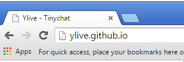
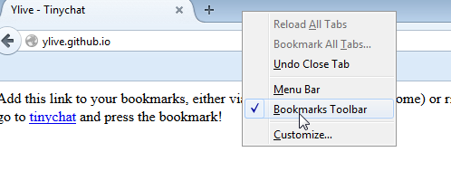
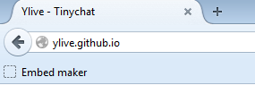
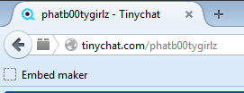

Open the bookmark tool bar on your browser
On chrome it is ctrl-shift-b

On firefox right click the program bar, and make sure bookmarks toolbar is selected

Drag the Embed Maker button to your toolbar

Go to your favorite tinychat room and click the Embed Maker Bookmarklet
